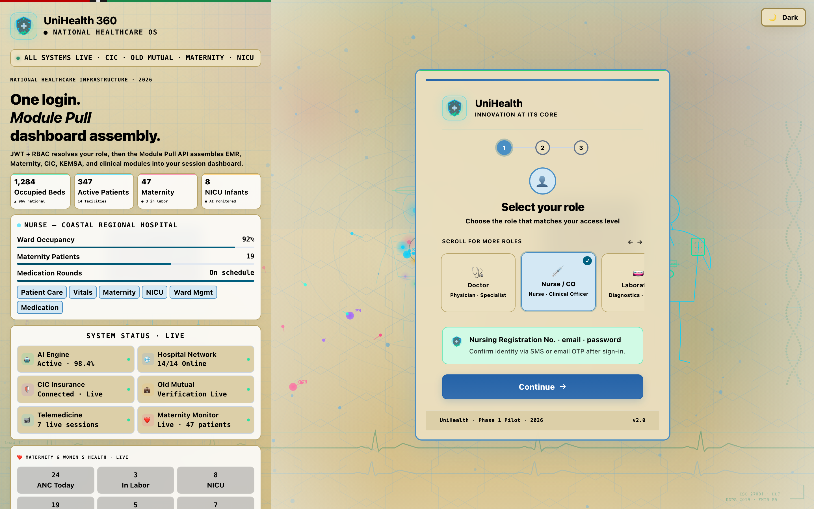
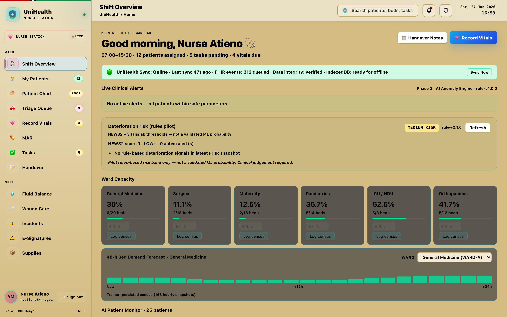
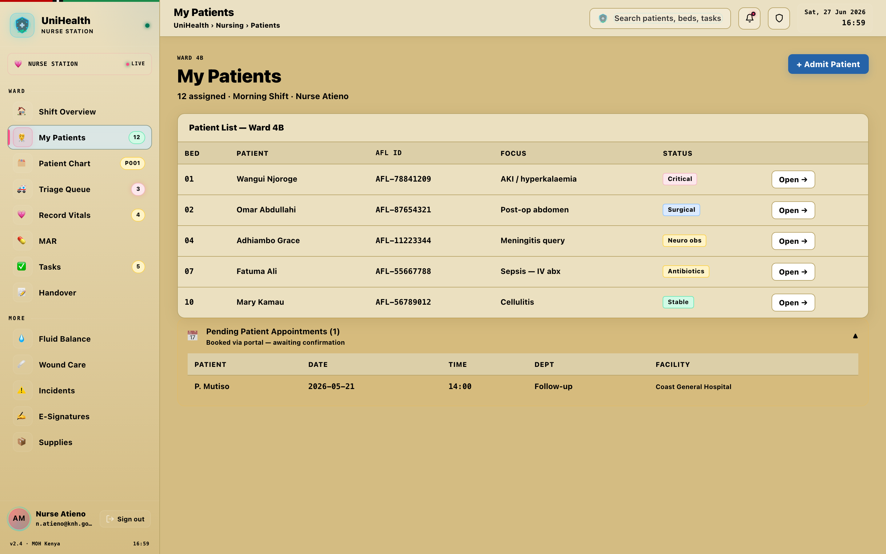
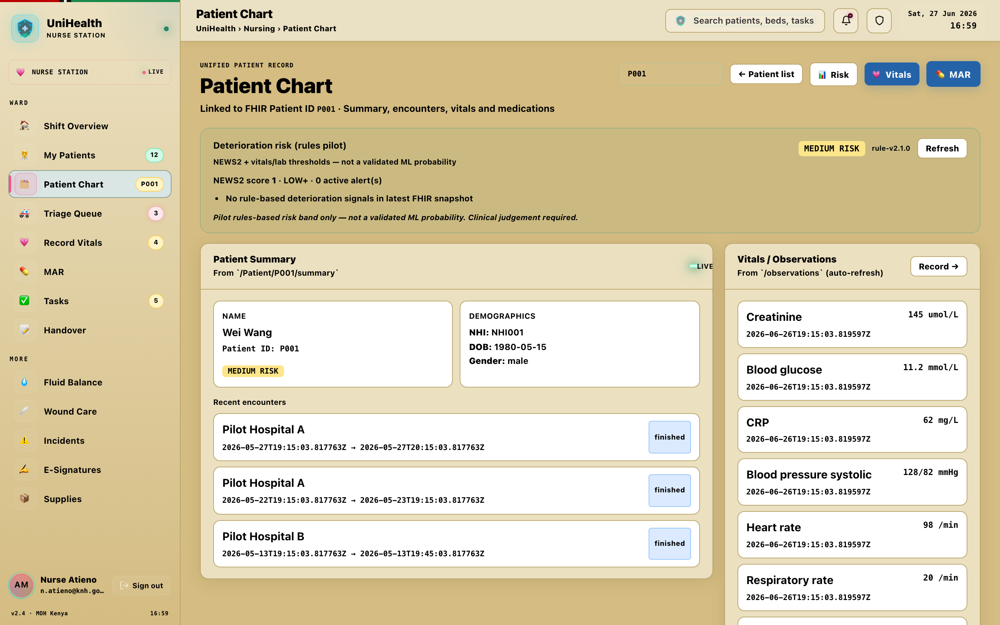
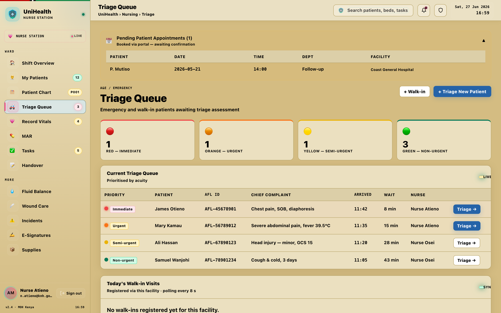
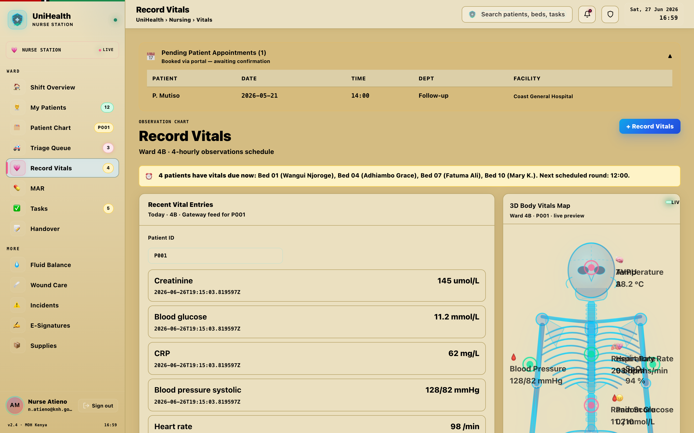
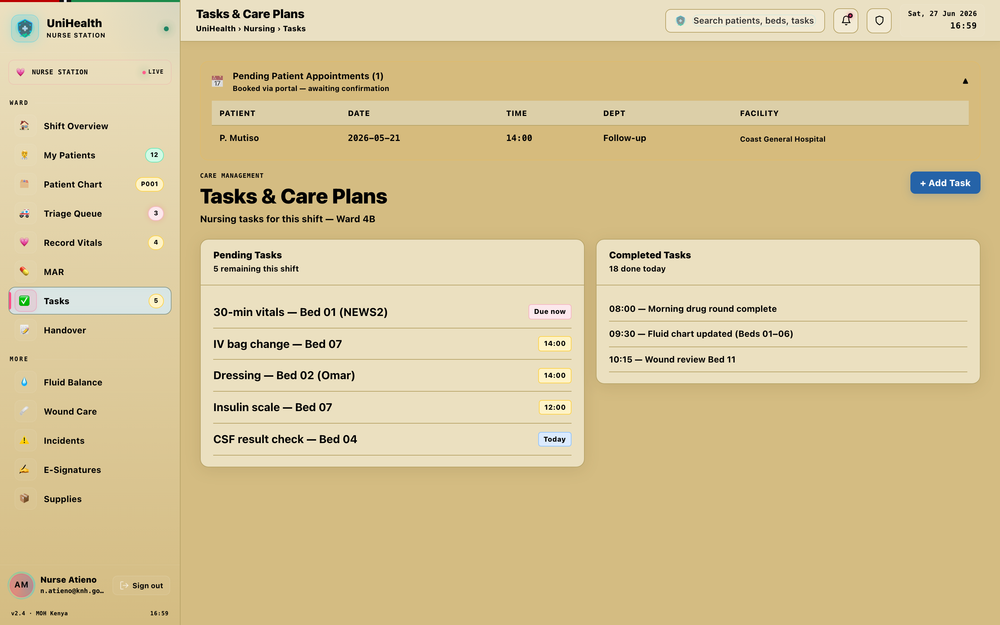
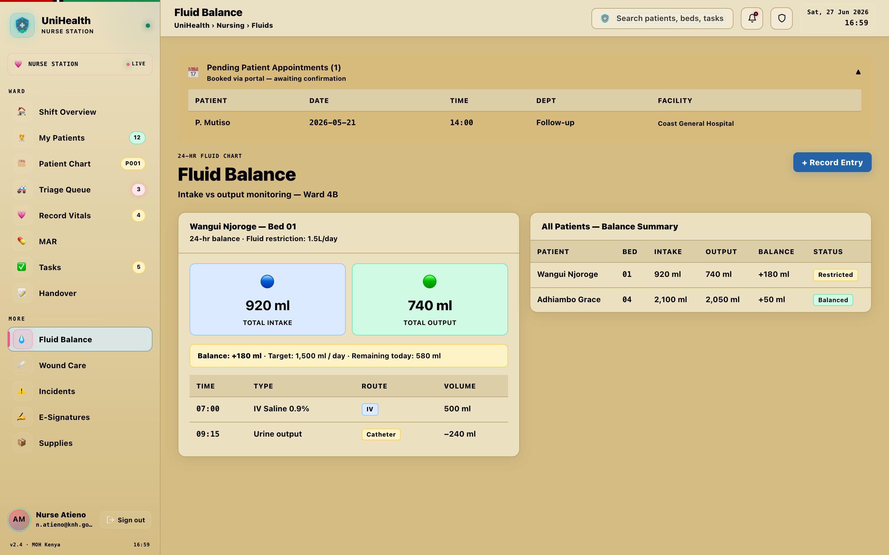
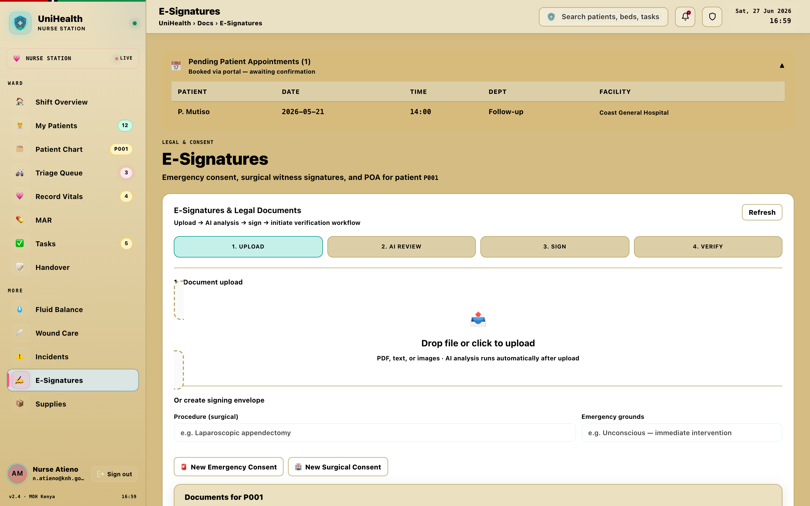
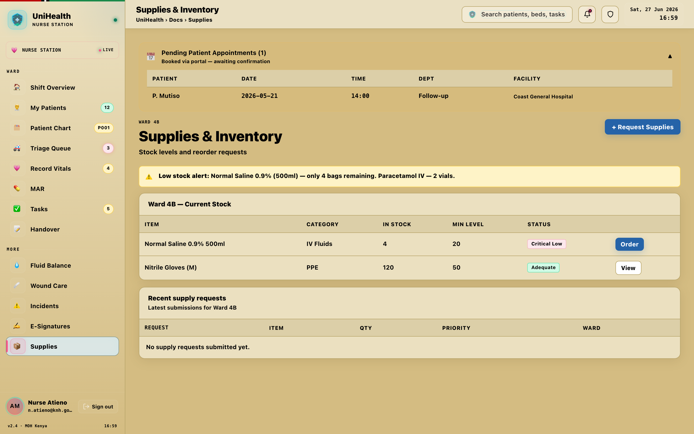

Nurse Dashboard Manual
Ward operations, vitals, MAR, triage, and handover — every nurse station tab documented.
1. Sign-in — Nurse / CO
Nursing staff sign in with registration number, email, password, and MFA — same four-step flow as other clinicians.
Step 1 — Select role
The Nurse / CO tile is highlighted in the role carousel. The audit panel logs authentication events for compliance.

The Nurse / CO tile is highlighted in the role carousel. The audit panel logs authentication events for compliance.
Step 2 — Enter credentials
Enter Nursing Registration No. (e.g. RN/12345), institutional email, and password.

Enter Nursing Registration No. (e.g. RN/12345), institutional email, and password.
Step 3 — Verify MFA
Enter the six-digit OTP sent to your institutional email. In staging/demo, use Practice 360 or OTP 123456.

Enter the six-digit OTP sent to your institutional email. In staging/demo, use Practice 360 or OTP 123456.
Step 4 — Launch dashboard
Confirms Nurse — Pilot Hospital B. Redirects to the Nursing Station dashboard.

Confirms Nurse — Pilot Hospital B. Redirects to the Nursing Station dashboard.
2. Dashboard layout
The Nurse Station sidebar groups ward workflows and extended care modules.
| Zone | Purpose |
|---|---|
| Sidebar — Ward | Shift overview, patients, chart, triage, vitals, MAR, tasks, handover |
| Sidebar — More | Fluids, wounds, incidents, e-sign, supplies |
| Top bar | Shift context, search, alerts, sign-out |
3. Ward tabs
Shift Overview

Start-of-shift summary: assigned patients, tasks due, ward alerts, and AI anomaly feed.
My Patients

Roster of patients under your care with acuity and last-vitals indicators.
Patient Chart

Read-only longitudinal view for the active patient — allergies, meds, obs.
Triage Queue

Emergency and walk-in triage queue with priority scoring.
Record Vitals

Capture BP, HR, RR, temp, SpO₂, pain, and AVPU — body diagram assist.
MAR

Medication Administration Record — due doses, given/refused/hold actions.
Tasks

Care plan tasks and reminders with completion logging.
Handover

SBAR-style shift handover notes for outgoing/incoming staff.
4. Extended care tabs
Fluid Balance

Intake/output charting and fluid balance trends.
Wound Care

Wound assessment documentation and dressing plans.
Incidents

File and review clinical incident reports.
E-Signatures

Consent and nursing document e-sign pipeline.
Supplies

Ward supply requests and inventory levels.
5. Tips & troubleshooting
Recommended workflow
- Open Shift Overview and review assignments.
- Process Triage Queue for new arrivals.
- Record Vitals and administer MAR doses on schedule.
- Complete Tasks and document Handover at shift end.
Common issues
| Issue | Action |
|---|---|
| Vitals not saving | Check gateway; confirm patient ID selected |
| MAR empty | Verify medication requests exist for patient via API |
| AI alerts silent | WebSocket connects direct to :8100 in dev; REST fallback polls every 15s |